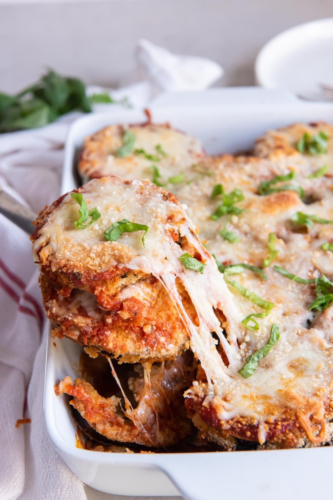

Baked Eggplant Parmesan

- Meal
- Dinner
- Serves
- 6 (recipe makes 8 servings — a lunch or two left over)
- Protein
- vegetarian (eggplant, egg, cheese)
- Cook
- oven · 25 min active / 70 min total · medium
- Make-ahead / leftovers
- yes (assemble ahead; bake 35–40 min from cold) / yes
- Mediterranean
- no
- WW tier
- moderate
- Status
- Trying out (probation)
Kristine's Kitchen baked eggplant Parmesan: eggplant rounds breaded in flour, egg, and Parmesan breadcrumbs and oven-baked (not fried) until golden, then layered with marinara, mozzarella, and Parmesan and baked until bubbly. All the comfort of the fried version with a sheet pan doing the work.
Ingredients
- 2 medium eggplants (~1 1/2 lb total), sliced into 1/2-inch rounds
- 3/4 cup all-purpose flour
- 3 eggs + 3 Tbsp water
- 1 cup Italian-seasoned breadcrumbs
- 3/4 cup grated Parmesan, divided
- 1/2 tsp black pepper
- 1 jar (24 oz) marinara
- 8 oz shredded mozzarella
- Fresh basil (optional)
- To serve: whole-wheat spaghetti tossed with a little marinara, and a green salad
Method
- Heat the oven to 400°F; line a large baking sheet (or two) with parchment.
- Set up three shallow dishes: flour; eggs whisked with water; breadcrumbs mixed with half the Parmesan and the pepper.
- Dredge each eggplant slice in flour (tap off excess), then egg, then breadcrumbs. Lay in a single layer on the sheet.
- Bake 20 minutes until golden — no flipping. Lower the oven to 375°F.
- Spread about 1 cup marinara in a 9x13 dish. Layer half the eggplant, half the remaining sauce, half the mozzarella, and half the remaining Parmesan. Repeat.
- Bake uncovered 25–28 minutes until browned on top. Garnish with basil.
Notes
- Kristine's recipe makes 8 servings — kept as written so the 9x13 is full; leftovers reheat well.
- Baking instead of frying keeps this out of the heavy tier.
- Not Spinach Ricotta Chicken Bake or Turkey Baked Ziti — meatless, eggplant is the main. Counts as a cooked-tomato-sauce night.
- Kid tip: slice the eggplant a bit thinner (3/8 inch) so it crisps more — it reads like chicken Parm.
- Mediterranean ✗ honestly: vegetarian + vegetables = 2 of 4 (no olive oil, refined breadcrumbs). With whole-wheat spaghetti on the side it's a balanced plate. moderate.